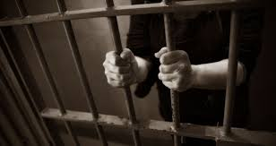

La cantine?empoisonnement volontaire?
L’école, cet endroit si merveilleux… ou plutôt, ce centre de "séquestration volontaire" où nous passons des heures à nous demander ce qu’on a bien pu faire pour mériter un tel sort. On pourrait presque appeler ça un camp de rééducation pour jeunes esprits. Pas besoin de chaînes ni de portes verrouillées, non, l'école a son propre système de contrôle : les heures de cours interminables, les devoirs à faire, et cette étrange sensation qu’on est en prison, mais avec un stylo et un cahier. Il y a les maîtres et maîtresses, ces gardiens du savoir, qui distribuent les sentences sous forme de contrôles surprise. Mais attention, pas de prisonniers réels ici, juste des ados un peu trop bruyants, des enfants un peu trop fatigués, et des collégiens à la limite de la révolte... Le seul échappatoire ? Le récréation, mais attention, 15 minutes top chrono, et retour a la realite . Un repas dans la limite du passable avec un gâteau à la cantine comme seule recompense , et c’est reparti pour le marathon des cours de maths et de géographie. Les examens ? Oh, ça, c’est comme le moment où on doit se rendre à la salle de torture : on te jette une feuille, et tu dois répondre à des questions dont tu n’as même pas vu la couleur pendant toute l'année. Mais ça, c’est la règle du jeu, l’école c’est "soit tu réussis, soit tu redoubles", comme un test final avant de pouvoir t’échapper dans le monde réel. L’horreur absolue, c’est cette fameuse sonnerie, ce cri du cœur qui marque la fin de chaque heure de cours. C’est comme un réveil en pleine nuit : t’as à peine le temps de respirer, et te voilà déjà dans la zone de confinement suivante… Mais bon, après tout, l’école, c’est aussi la promesse d’un avenir, même si ce futur semble parfois aussi flou qu'un devoir à rendre la veille de la rentrée ! Bref, la vraie question qui se pose : est-ce que l’école est un lieu d’apprentissage… ou juste un grand lieu de torture ?
